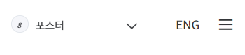
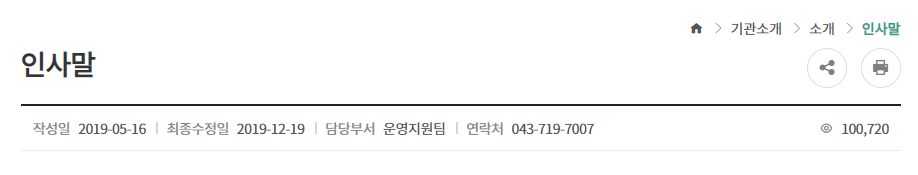

질병관리본부는 과학적 근거 기반의 질병 예방관리
국제 교류 증가, 기후변화, 환경파괴 등 전 세계적으로 메르스, 에보라열과 같은 신종감염병 위험이 증가하고 있습니다. 이와 더불어
결핵, 중증열성혈소판감소증후군, 수인성감염병 등 국내 유행 감염병도 지속 발생하고 있습니다.
24시간 긴급상황실・즉각대응팀 운영, 격리병상・치료제 자원 확보, 관계 부처・지자체・의료계 협력체계 구축, 역학조사 전문 인력
양성・훈련 등을 통해 신종감염병 공중보건위기에 대비하겠습니다.
국가 예방접종 사업을 확대하고 감염병 예방수칙 홍보를 통해 감염병을 예방하고 주요 감염병별 맞춤형 대책을 지속 추진하겠습니다.
인구 고령화에 따라 치매, 심뇌혈관질환으로 인한 질병부담이 증가하고 있습니다.
만성질환 예방관리를 위한 건강지표를 생산・분석하고, 건강 문제와 건강격차 원인을 규명하여 근거 기반의 만성질환 예방관리
정책을 추진하겠습니다.
희귀질환 의료비 지원, 진단 및 상담 지원, 연구를 강화하겠습니다.
국립보건연구원은 국가 질병관리 R&D 중추기관으로서 공공에서 반드시 수행해야 할 감염병 및 만성질환, 한국인 유전체에 대한
연구를 수행하고있습니다.
보건의료 R&D 인프라 확충을 통하여 민간연구 활성화를 지원하고, 유전체 연구, 줄기세포 및 재생의료 연구, 공공백신 개발연구
등 중점 분야에 대한 선도적 연구를 수행하겠습니다.
질병관리본부는 국가 공중보건관리 중추기관으로서 국민 건강을 증진하고, 공중보건 위기로부터 사회 안전을 지키기 위해, 전문성・
혁신・소통・신뢰를 기반으로 24시간 365일 최선을 다하겠습니다.
안녕하십니까?
질병관리본부장 정은경입니다.
질병관리본부는 과학적 근거 기반의 질병 예방관리
정책 추진과 보건의료 연구를 통하여 국민의 건강을
지키고, 보다 안전한 사회를 만들기 위해 최선을
다하겠습니다.
건강한 국민, 안전한 사회를 만들겠습니다.
첫째, 감염병으로부터 안전한 사회를 위해 24시간 365일 대응하겠습니다.
국제 교류 증가, 기후변화, 환경파괴 등 전 세계적으로 메르스, 에보라열과 같은 신종감염병 위험이 증가하고 있습니다. 이와 더불어
결핵, 중증열성혈소판감소증후군, 수인성감염병 등 국내 유행 감염병도 지속 발생하고 있습니다.
24시간 긴급상황실・즉각대응팀 운영, 격리병상・치료제 자원 확보, 관계 부처・지자체・의료계 협력체계 구축, 역학조사 전문 인력
양성・훈련 등을 통해 신종감염병 공중보건위기에 대비하겠습니다.
국가 예방접종 사업을 확대하고 감염병 예방수칙 홍보를 통해 감염병을 예방하고 주요 감염병별 맞춤형 대책을 지속 추진하겠습니다.
둘쨰, 만성질환, 희귀질환에 대한 예방관리대책을 추진하겠습니다.
인구 고령화에 따라 치매, 심뇌혈관질환으로 인한 질병부담이 증가하고 있습니다.
만성질환 예방관리를 위한 건강지표를 생산・분석하고, 건강 문제와 건강격차 원인을 규명하여 근거 기반의 만성질환 예방관리
정책을 추진하겠습니다.
희귀질환 의료비 지원, 진단 및 상담 지원, 연구를 강화하겠습니다.
셋째, 질병 극복, 건강수명연장을 위한 질병관리 R&D를 강화하겠습니다.
국립보건연구원은 국가 질병관리 R&D 중추기관으로서 공공에서 반드시 수행해야 할 감염병 및 만성질환, 한국인 유전체에 대한
연구를 수행하고있습니다.
보건의료 R&D 인프라 확충을 통하여 민간연구 활성화를 지원하고, 유전체 연구, 줄기세포 및 재생의료 연구, 공공백신 개발연구
등 중점 분야에 대한 선도적 연구를 수행하겠습니다.
질병관리본부는 국가 공중보건관리 중추기관으로서 국민 건강을 증진하고, 공중보건 위기로부터 사회 안전을 지키기 위해, 전문성・
혁신・소통・신뢰를 기반으로 24시간 365일 최선을 다하겠습니다.